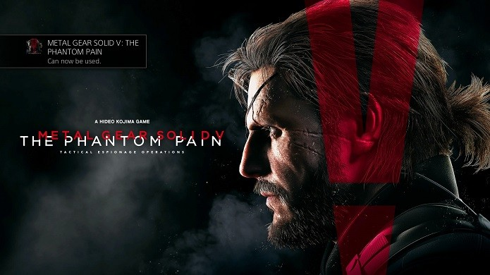
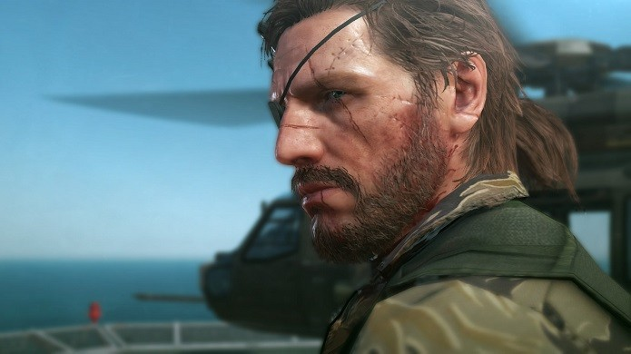

Metal Gear Solid 5: The Phantom Pain é a cereja do bolo da famosa série de games de “espionagem”. A despedida do aclamado produtor Hideo Kojima da Konami não poderia ser em melhor estilo: o novo Metal Gear tem toques de uma obra-prima. Daquelas que, sem dúvida, podem entrar para a história dos jogos eletrônicos. É um grand finale, para aplaudir de pé e gritar “Bravo!”. Confira a análise completa do título disponível para PlayStation 3, PS4, Xbox One, Xbox 360 e PC.
Se o “prólogo” dessa história, Ground Zeroes, causou uma ótima impressão e deixou os gamers com água na boca, sua “versão final” não decepciona. Gráficos de alto nível, trama envolvente, muito suspense, um mundo aberto para se explorar e a excelente jogabilidade são os destaques. É como se Kojima tivesse trabalhado todos estes anos pensando neste momento.
Metal Gear Solid V: The Phantom Pain começa com Snake, protagonista da série, sendo acordado em um hospital de administração britânica após passar nove anos em coma. A trama se desenrola a partir dali, e mostra o personagem e seu parceiro Kazuhira Miller (Kaz) em busca de vingança contra a organização Cipher.
O prólogo de The Phantom Pain por si só já é de tirar o fôlego. Snake precisa fugir de seu leito e escapar do hospital para fugir dos vilões da Cipher, que querem terminar o que foram incapazes de fazer há nove anos: matá-lo. A fuga é cheia de reviravoltas – e tem um “quê” paranormal ao mesmo tempo surpreendente e agoniante. É mais do que o suficiente para deixar o jogador no clima do que está por vir. Demora um pouco, mas assim que a introdução, que é para lá de cinematográfica, acaba, o jogador vai para o Afeganistão com Snake. É lá que começa a história do game, que tem seu enredo linear, porém é baseado em um mundo totalmente aberto.
O enredo é bastante atrativo e prende o jogador do início ao fim. As sidequests acabam sendo um bom complemento e tornam a experiência mais prolongada e divertida. O seu trabalho visual é praticamente impecável. Os gráficos são muito bonitos, especialmente, claro, nas cutscenes, mas no in-game também agradam bastante.
Os diálogos é que são um pouco pobres – especialmente por parte do protagonista. Ele fala pouco. E, às vezes, como as animações são um pouco longas, a parte que é menos jogo e mais “cinema” pode incomodar alguns jogadores – especialmente na reta final ou até mesmo durante o comecinho de The Phantom Pain.
Mas nada impressiona tanto quanto a jogabilidade de Metal Gear Solid 5: The Phantom Pain. Para os fãs da franquia, é a consagração. Para os novatos, uma prova de que eis aqui uma série que merece todo o reconhecimento que tem. Os controles são simples e os movimentos de Snake são perfeitos.
Destaca-se ainda a interação com veículos, como helicópteros, e até mesmo com o seu principal companheiro de aventuras: um cavalo. Sem falar na infinidade de armas que se pode desbloquear e nos diferentes visuais que Snake pode utilizar nas missões. É como jogar o Metal Gear dos anos 90 com tudo de bom da nova geração.
Um ponto interessante é que The Phantom Pain lembra um pouco mais de Hitman do que do próprio Metal Gear Solid em alguns pontos. A estratégia ainda é importante. Fazer seu caminho de forma furtiva ainda é o ponto mais desafiador. Porém, os jogadores que possuem o estilo mais “atirador” também irão se divertir.
As camuflagens estão ótimas. Tem até caixa de papelão para colocar no corpo e fazer o inimigo não ver o personagem. Ou, então, ir agachado/rastejando, derrubá-lo e fazê-lo falar tudo que você quer ouvir. Além disso, também é possível colocar um fuzil ou um lança-foguetes e atirar até matar todos eles. O importante é completar os objetivos, não importa como.
Ser o “Big Boss” é divertido, desafiador e empolgante. Ele se encaixa muito bem nos dois estilos de jogo. Afinal, motivado pela vingança, ele pode usar o “stealth”, que sempre foi o seu ponto forte, ou estar tão irritado que não quer nem saber o que vem pelo caminho. No geral, é uma experiência incrível, de qualquer maneira.
Uma adição bem pensada é a nova base que abriga soldados da Diamond Dogs, o exército de Snake. Para liberar armas e itens, é preciso que eles trabalhem para você por lá. Há alguns soldados, mas o jogador “recruta” outros, derrotando seus inimigos do game, e transportando-os para a Base Mãe. Há um tutorial bem legal sobre isso no jogo.
A experiência de Metal Gear Solid V: The Phantom Pain, claro, é muito mais “satisfatória” para quem acompanha a série há algum tempo. É o desfecho para uma franquia que tem contornos épicos desde sua criação. Entretanto, o jogo está longe de ser voltado só para este público.
Pelo contrário. Até mesmo quem nunca jogou um game sequer de Metal Gear pode (ou melhor, deve) desfrutar deste game tranquilamente. A jogabilidade é supersimples, seu enredo tem ligações com o passado, mas não é difícil de compreender e o que ele pode oferecer é tão bom que, sem dúvida, vale o investimento.
Pense em Metal Gear Solid 5: The Phantom Pain como aquele final épico para uma série que marcou gerações. É como Senhor dos Anéis: O Retorno do Rei ou Harry Potter e as Relíquias da Morte. É algo para ver e rever. No caso, jogar e "rejogar". Apreciar as animações, jogar a história inteira, fazer as sidequests. Não é todo dia que temos uma obra-prima dos games como essa. Vale, e muito, aproveitar.
